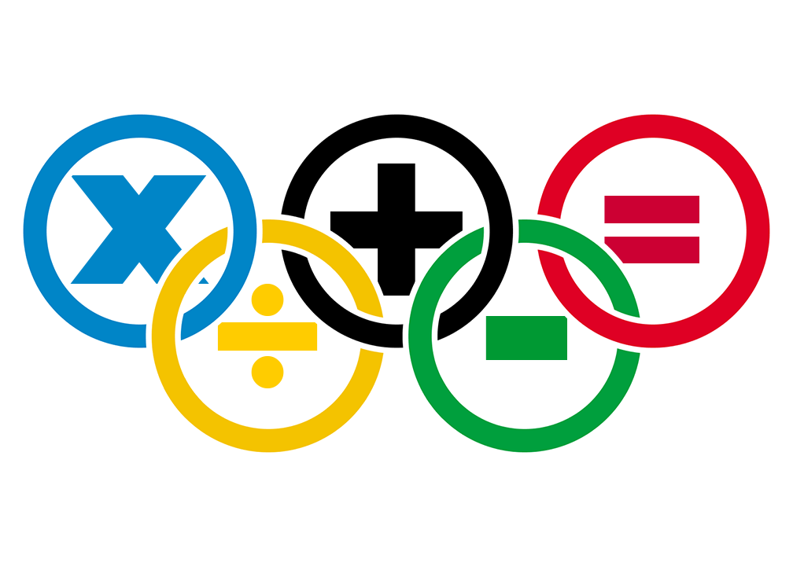

TECAMPEONATO
De todos los concursos en los que he participado creo sinceramente que el TECAMPEONATO fue el mejor organizado, el evento fue rápido y eficaz, cumplió su función de dar interes por el aprendizaje. Se basó en tres pruebas, dos en equipo y una individual